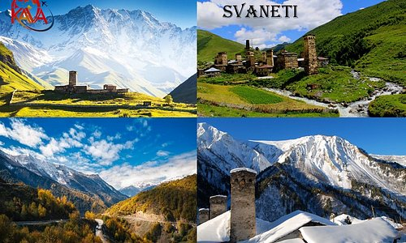

Samegrelo-Zemo Svaneti (Georgian: სამეგრელო-ზემო სვანეთი) is a region (Mkhare) in western Georgia with a population of 308,358 (2021) and a surface of 7,468 km2 (2,883 sq mi). The region has Zugdidi as its administrative center, while Giorgi Guguchia is governor of the region since June 2021. Samegrelo-Zemo Svaneti is compiled of the historical Georgian provinces of Samegrelo (Mingrelia) and Zemo Svaneti (i.e., Upper Svaneti).
The region has one self governing city (Poti) and 8 municipalities with 143 administrative communities (temi), totalling to 531 populated settlements:
Georgian is spoken by the entire population of the region and by the ethnic
minorities like Russians and others. Mingrelian is a Kartvelian language
spoken by the Mingrelians, a sub-group of Georgian people and native to
Mingrelia.
Svan is also a Kartvelian language, spoken by the Svans, a sub-group of
Georgian people native to Svaneti.